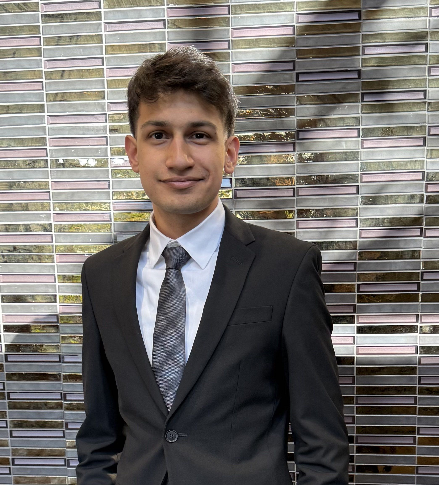

Co-Founder & Creative Director
I'm currently pursuing a Bachelor's in Interior Design at Toronto Metropolitan University and the founder of Alina Khan Studio. I'm passionate about art, design, and architecture, especially building spaces rooted in the rich traditions and history I grew up with, reimagined through a modern lens. After struggling to find products that authentically reflected my own heritage, I was inspired to co-found Numaish. Through my work, I seek to bring meaningful design into contemporary spaces, making tradition both accessible and relevant.
Co-Founder & Operations Director
I'm a healthcare professional from Memphis, Tennessee. I've long been deeply passionate about Desi heritage and history, particularly the artistic traditions that have shaped South Asian identity for generations. Recognizing a growing disconnect within the diaspora from these creative roots, I was inspired to help preserve and revive this legacy. Through Numaish, I aim to encourage both younger and older generations to reconnect with and embrace the artistic expressions that have long been foundational to South Asian society.

Co-Founder & Chief Technology Officer
I'm a graduate of the University of Michigan and former President of the Indian Muslim Students Association. As CTO of Numaish, I lead the development of the platform and technology behind our mission. Growing up in a South Asian Muslim community, I saw how difficult it can be for artists to share their work and reach wider audiences. Through Numaish, I hope to use technology to help preserve, celebrate, and showcase the creativity of our culture.
Numaish was founded by three cousins Alina Khan, Muhammad Omar Qadir and Hamzah Ali — Their rich upbringing with Desi heritage at home but not finding it in the art they were searching for led them to build a new brand that fills that void.
"Numaish" — meaning exhibition in Urdu — is more than a name. It's a declaration. A commitment to putting Desi Muslim culture on display, proudly and unapologetically.
Finding Desi artists, and the artwork that carries our stories, is extraordinarily difficult. For too long, South Asian creatives have been overlooked, their work scattered, unseen, and pushed to the margins of the wider art world.
And then, a question lingers.
Where is the rest of our story?
Numaish exists to give our artists the spotlight they deserve. To celebrate the makers carrying forward Mughal grandeur, Karachi's streets, Hyderabadi elegance, Delhi's spiritual weight, the color along Dhaka's riverbanks, and the coastal quiet of Chittagong, alongside countless other traditions that have been forgotten or ignored.
We invite you to support these artists, to learn the diverse stories behind their work, and to discover the cultural pieces that risk being lost. And we invite our artists to find one another here, to grow, exchange, and expand their palates together as a community.
Through creativity and beauty, Numaish keeps the remembrance of our culture alive, one artist, one piece, one story at a time.
For our artists, Numaish offers a spotlight on the pieces they pour themselves into, and a place to be discovered, celebrated, and taken seriously. We create opportunities for makers to connect with one another, exchange techniques, share traditions, and grow alongside a community that understands where their work comes from.
For our audience, Numaish is an invitation to meet the people behind the work, to learn directly from artists, and to bring home pieces that have long been overlooked. Every profile is a chance to discover a new story, a new tradition, and a new corner of South Asian heritage that deserves to be seen.
Together, we build a space where artists are championed and audiences are enriched — where forgotten pieces find their voice again.